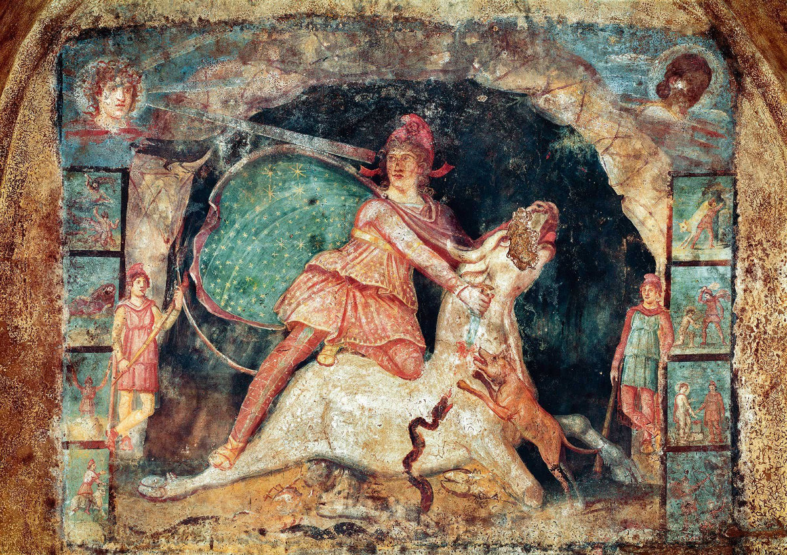
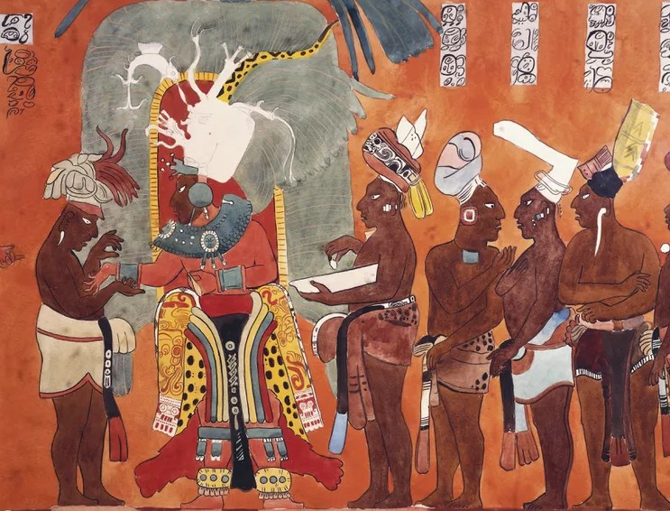
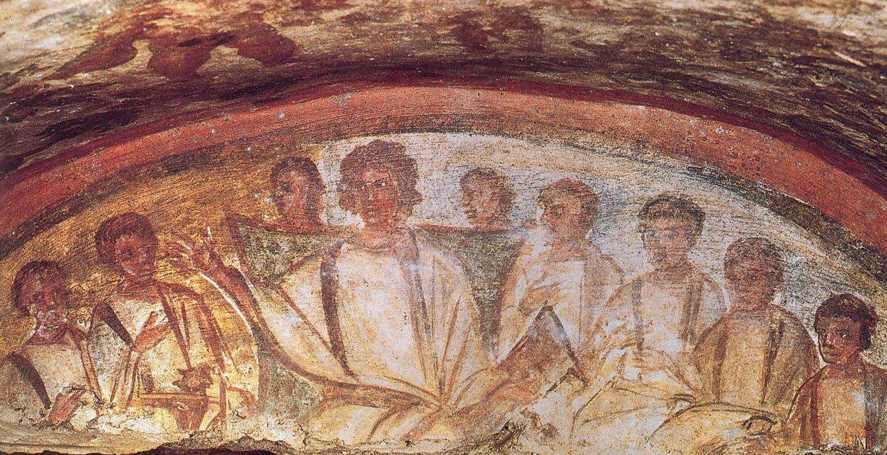

Sacred Geography
An Interactive Atlas of Belief
Toggle biblical place names directly on the map, or open a curated external atlas alongside it — each maintained by its own research project.



From the tauroctony of the Mithraic mysteries to the painted court of Bonampak, from catacomb apostles to Laozi astride his ox — an archive of how civilizations have mapped, painted, and inhabited the sacred.
Across every culture archAIology studies, ritual and myth are inseparable from place — a cave where a bull is slain beneath the stars, a court where a king receives tribute beneath a jaguar canopy, a catacomb chamber where the dead are gathered before an enthroned teacher, a riverbank where a sage rides west on the back of an ox.
This page gathers that sacred geography into one interactive atlas: biblical place names, Mithraic temples and spelaea, the missionary geography of early Christianity, the textual world of the Pāli Canon, and the episcopal networks of the late antique Mediterranean.
Toggle biblical place names directly on the map, or open a curated external atlas alongside it — each maintained by its own research project.